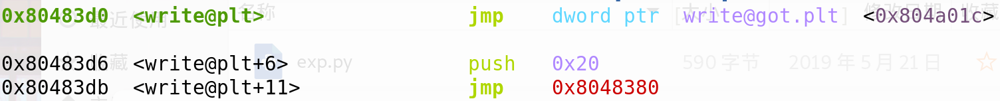
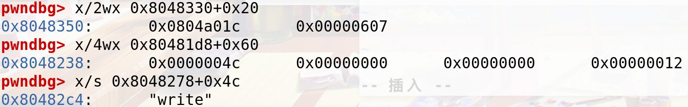
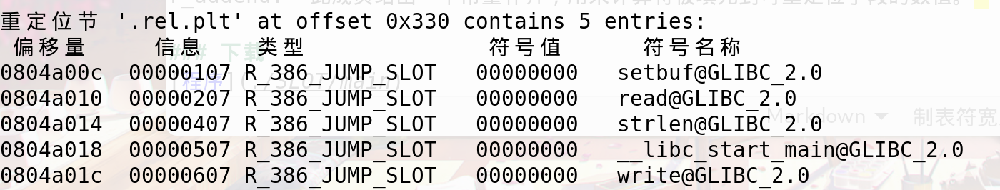

JUMP_SLOT
了解
在ELF文件里面，当函数是动态链接时，那么可能会有延迟绑定，第一步会lookup绝对地址，写入全局偏移表中函数GOT地址里面，其中会经历几个步骤，通过必要的信息确定最后的实际函数地址
[1].rel.plt节是用于函数重定位，.rel.dyn节是用于变量重定位
[2].got节保存全局变量偏移表，.got.plt节保存全局函数偏移表。.got.plt对应着Elf32_Rel结构中r_offset的值.
[3].dynsym节包含了动态链接符号表。Elf32_Sym[num]中的num对应着ELF32_R_SYM(Elf32_Rel->r_info).
[4].dynstr节包含了动态链接的字符串。这个节以\x00作为开始和结尾，中间每个字符串也以\x00间隔.
[5].plt节是过程链接表。过程链接表把位置独立的函数调用重定向到绝对位置.
准备
此次使用32位ELF文件介绍
1 | readelf -r main |
r_offset: 0x0804a01c
r_info: 0x607
1 | objdump -d -j .plt main |
plt[0]: 0x08048380
index_offset: 0x20(write_plt)
1 | objdump -d -j .rel.plt main |
rel.plt: 0x08048330
1 | objdump -s -j .dynsym main |
2 | objdump -s -j .dynstr main |
.dynsym: 0x080481d8
.dynstr: 0x08048278
准备工作完成
分析
在第一次调用write函数的时候，其实GOT表里面没有加载write函数的实际地址，其中保存的是EIP+4的位置，即”push 0x20”的EIP

程序首先将index_offset 入栈
继续令 link_map=*(GOT+4) 入栈
最后转到 _dl_runtime_resolve 处执行
程序相当于执行了 _dl_runtime_resolve(link_map, reloc_arg)，完成符号解析，写入write函数的实际地址到GOT里面，随后控制权交给write函数

而 write_got 地址即为 .rel.plt + index_offset
1 | typedef struct { |
2 | Elf32_Addr r_offset; |
3 | Elf32_Word r_info; |
4 | } Elf32_Rel; |
5 | |
6 | typedef struct { |
7 | Elf32_Addr r_offset; |
8 | Elf32_Word r_info; |
9 | Elf32_Sword r_addend; |
10 | } Elf32_Rela; |
32位用Elf32_Rel，64位用Elf32_Rela

对r_info而言，Elf32_Sym[ELF32_R_SYM(i)] 对应着函数的符号信息，此处则可利用伪造符号信息从而令程序执行另外的函数
r_info 末尾的 7代表 延迟绑定，而在_dl_fixup函数中，会验证是否为7，判断是否为延迟绑定来确定是否继续运行
1 | #define ELF32_R_SYM(i) ((i)>>8) |
2 | #define ELF32_R_TYPE(i) ((unsigned char)(i)) |
3 | #define ELF32_R_INFO(s,t) (((s)<<8)+(unsigned char)(t)) |
总结
如果我们需要进行攻击利用，首先在函数首次调用的时候，伪造index_offset 从而令reloc在我们可控的区域，然后伪造r_info,令符号信息 也位于我们可控的区域，那么即可达到攻击的效果.
资料
[1]._dl_fixup函数
1 | _dl_fixup(struct link_map *l, ElfW(Word) reloc_arg) |
2 | { |
3 | // 首先通过参数reloc_arg计算重定位入口，这里的JMPREL即.rel.plt，reloc_offset即reloc_arg |
4 | const PLTREL *const reloc = (const void *) (D_PTR (l, l_info[DT_JMPREL]) + reloc_offset); |
5 | // 然后通过reloc->r_info找到.dynsym中对应的条目 |
6 | const ElfW(Sym) *sym = &symtab[ELFW(R_SYM) (reloc->r_info)]; |
7 | // 这里还会检查reloc->r_info的最低位是不是R_386_JUMP_SLOT=7 |
8 | assert (ELFW(R_TYPE)(reloc->r_info) == ELF_MACHINE_JMP_SLOT); |
9 | // 接着通过strtab+sym->st_name找到符号表字符串，result为libc基地址 |
10 | result = _dl_lookup_symbol_x (strtab + sym->st_name, l, &sym, l->l_scope, version, ELF_RTYPE_CLASS_PLT, flags, NULL); |
11 | // value为libc基址加上要解析函数的偏移地址，也即实际地址 |
12 | value = DL_FIXUP_MAKE_VALUE (result, sym ? (LOOKUP_VALUE_ADDRESS (result) + sym->st_value) : 0); |
13 | // 最后把value写入相应的GOT表条目中 |
14 | return elf_machine_fixup_plt (l, result, reloc, rel_addr, value); |
15 | } |
1 | [2]. |
2 | r_offset: 此成员给出了需要重定位的位置。对于一个可重定位文件而言，此值是从需要重定位的符号所在节区头部开始到将被重定位的位置之间的字节偏移。对于可执行文件或者共享目标文件而言，其取值是需要重定位的虚拟地址，一般而言，也就是说我们所说的 GOT 表的地址。 |
3 | r_info: 此成员给出需要重定位的符号的符号表索引，以及相应的重定位类型。 例如一个调用指令的重定位项将包含被调用函数的符号表索引。如果索引是 STN_UNDEF，那么重定位使用 0 作为“符号值”。此外，重定位类型是和处理器相关的。 |
4 | r_addend: 此成员给出一个常量补齐，用来计算将被填充到可重定位字段的数值。 |